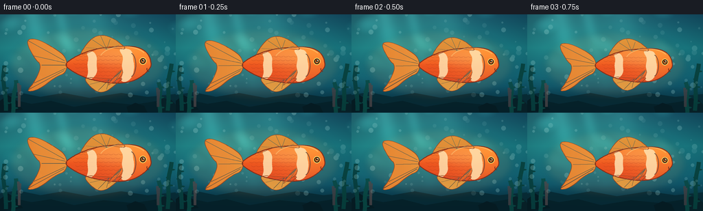
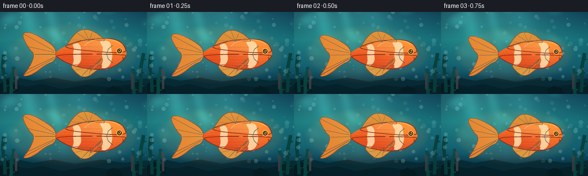
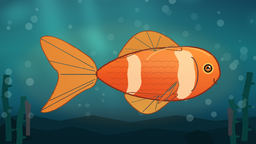
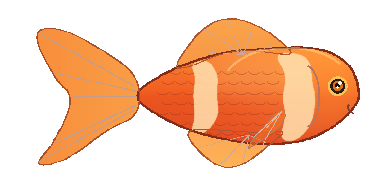
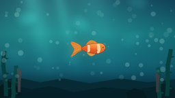
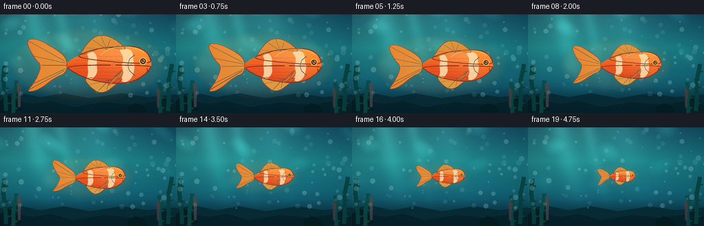
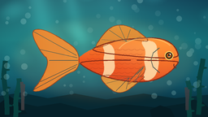

CODING AGENTS AS PIXEL WORLD MODELS
traex/DeepSeek-V4.1-Flash · instance_preservation_0051
点击播放 · 原生 RGB 像素
逐轮保存的候选
回放视频、检查图与代码变化。
每份候选均可单独播放。实际图片检查记录在下方工具轨迹中。
候选 01播放与检查图
点击播放 · 原生 RGB 像素


展开代码变化
--- 上一保存版本
+++ 本次保存版本
@@ -0,0 +1,597 @@
+from pathlib import Path
+import math
+
+import imageio.v2 as imageio
+import numpy as np
+from PIL import Image, ImageDraw, ImageFilter
+
+from artifact_io import save
+
+
+CASE_DIR = Path(__file__).resolve().parent
+WIDTH = 256
+HEIGHT = 144
+FPS = 4.0
+FRAME_COUNT = 20
+SUPERSAMPLE = 4
+FW = WIDTH * SUPERSAMPLE
+FH = HEIGHT * SUPERSAMPLE
+
+FISH_LAYER_SIZE = (800, 400)
+FISH_CONTENT_CENTER = (400.0, 195.0)
+FISH_CONTENT_WIDTH = 700.0
+
+
+def lerp_color(a, b, amount):
+ return tuple(float(a[i]) + (float(b[i]) - float(a[i])) * amount for i in range(3))
+
+
+def smoothstep(value):
+ value = max(0.0, min(1.0, value))
+ return value * value * (3.0 - 2.0 * value)
+
+
+def chaikin(points, iterations=2, closed=True):
+ pts = [np.asarray(point, dtype=np.float32) for point in points]
+ for _ in range(iterations):
+ refined = []
+ count = len(pts)
+ limit = count if closed else count - 1
+ if not closed:
+ refined.append(pts[0])
+ for index in range(limit):
+ current = pts[index]
+ following = pts[(index + 1) % count]
+ refined.append(current * 0.75 + following * 0.25)
+ refined.append(current * 0.25 + following * 0.75)
+ if not closed:
+ refined.append(pts[-1])
+ pts = refined
+ return [tuple(map(float, point)) for point in pts]
+
+
+def polygon_mask(size, points, smoothing=2):
+ mask = Image.new("L", size, 0)
+ draw = ImageDraw.Draw(mask)
+ draw.polygon(chaikin(points, iterations=smoothing), fill=255)
+ return mask
+
+
+def colored_mask(mask, color):
+ color_layer = Image.new("RGBA", mask.size, tuple(color) + (255,))
+ color_layer.putalpha(mask)
+ return color_layer
+
+
+def clip_mask(mask, other):
+ return Image.fromarray(
+ (np.asarray(mask, dtype=np.uint16) * np.asarray(other, dtype=np.uint16) // 255).astype(
+ np.uint8
+ ),
+ "L",
+ )
+
+
+def make_water_base():
+ yy, xx = np.mgrid[0:FH, 0:FW].astype(np.float32)
+ y = yy / (FH - 1)
+ x = xx / (FW - 1)
+
+ stops = np.array([0.0, 0.34, 0.63, 0.82, 1.0], dtype=np.float32)
+ colors = np.array(
+ [
+ [17, 72, 96],
+ [24, 121, 131],
+ [19, 103, 121],
+ [13, 75, 98],
+ [7, 45, 72],
+ ],
+ dtype=np.float32,
+ )
+ rgb = np.empty((FH, FW, 3), dtype=np.float32)
+ for channel in range(3):
+ rgb[:, :, channel] = np.interp(y, stops, colors[:, channel])
+
+ edge_shade = 1.0 - 0.11 * ((x - 0.5) * 2.0) ** 2
+ rgb *= edge_shade[:, :, None]
+
+ glow = np.exp(-(((xx - FW * 0.30) / (FW * 0.44)) ** 2 + ((yy + 70) / (FH * 0.58)) ** 2))
+ rgb += glow[:, :, None] * np.array([25.0, 45.0, 30.0], dtype=np.float32)
+
+ floor_blend = np.clip((yy - FH * 0.73) / (FH * 0.13), 0.0, 1.0)
+ floor_color = np.array([8.0, 47.0, 55.0], dtype=np.float32)
+ rgb = rgb * (1.0 - 0.52 * floor_blend[:, :, None]) + floor_color * (
+ 0.52 * floor_blend[:, :, None]
+ )
+
+ # Broad, soft shafts of daylight.
+ shaft = np.zeros((FH, FW), dtype=np.float32)
+ for origin, width, strength in [
+ (FW * 0.18, FW * 0.055, 0.80),
+ (FW * 0.34, FW * 0.035, 0.52),
+ (FW * 0.54, FW * 0.075, 0.34),
+ ]:
+ center = origin + yy * 0.24
+ shaft += strength * np.exp(-((xx - center) / width) ** 2)
+ shaft *= np.clip(1.0 - y * 1.18, 0.0, 1.0)
+ rgb += shaft[:, :, None] * np.array([18.0, 43.0, 38.0], dtype=np.float32)
+
+ base = Image.fromarray(np.clip(rgb, 0, 255).astype(np.uint8), "RGB").convert("RGBA")
+ overlay = Image.new("RGBA", base.size, (0, 0, 0, 0))
+ draw = ImageDraw.Draw(overlay)
+
+ # Distant reef and foreground seabed.
+ draw.polygon(
+ [
+ (0, FH * 0.82),
+ (FW * 0.10, FH * 0.79),
+ (FW * 0.23, FH * 0.84),
+ (FW * 0.36, FH * 0.80),
+ (FW * 0.51, FH * 0.85),
+ (FW * 0.69, FH * 0.80),
+ (FW * 0.84, FH * 0.84),
+ (FW, FH * 0.81),
+ (FW, FH),
+ (0, FH),
+ ],
+ fill=(6, 39, 48, 210),
+ )
+ draw.polygon(
+ [
+ (0, FH * 0.91),
+ (FW * 0.08, FH * 0.87),
+ (FW * 0.18, FH * 0.91),
+ (FW * 0.29, FH * 0.88),
+ (FW * 0.42, FH * 0.94),
+ (FW * 0.59, FH * 0.89),
+ (FW * 0.76, FH * 0.92),
+ (FW * 0.90, FH * 0.88),
+ (FW, FH * 0.92),
+ (FW, FH),
+ (0, FH),
+ ],
+ fill=(5, 31, 39, 235),
+ )
+
+ rock_sets = [
+ [(0.00, 0.88), (0.045, 0.82), (0.095, 0.88), (0.13, 0.97), (0.0, 1.0)],
+ [(0.88, 0.91), (0.93, 0.85), (0.975, 0.87), (1.0, 0.92), (1.0, 1.0), (0.91, 1.0)],
+ [(0.72, 0.94), (0.77, 0.90), (0.82, 0.93), (0.84, 1.0), (0.73, 1.0)],
+ ]
+ for index, rock in enumerate(rock_sets):
+ points = [(int(px * FW), int(py * FH)) for px, py in rock]
+ color = (5, 27, 34, 255) if index != 1 else (7, 32, 39, 255)
+ draw.polygon(points, fill=color)
+
+ # Quiet seaweed at the edges keeps the central fish silhouette clear.
+ def seaweed(root_x, root_y, height, lean, phase, color):
+ points = []
+ for step in range(13):
+ t = step / 12.0
+ px = root_x + lean * t + math.sin(t * 7.0 + phase) * FW * 0.008 * t
+ py = root_y - height * t
+ points.append((px, py))
+ draw.line(points, fill=color, width=int(6 * SUPERSAMPLE), joint="curve")
+ for step in range(2, 12, 2):
+ t = step / 12.0
+ px = root_x + lean * t + math.sin(t * 7.0 + phase) * FW * 0.008 * t
+ py = root_y - height * t
+ side = -1 if step % 4 == 0 else 1
+ leaf_w = FW * 0.021
+ leaf_h = FH * 0.016
+ draw.ellipse(
+ (
+ px + side * leaf_w * 0.25 - leaf_w * 0.5,
+ py - leaf_h * 0.5,
+ px + side * leaf_w * 0.75 + leaf_w * 0.5,
+ py + leaf_h * 0.5,
+ ),
+ fill=color,
+ )
+
+ seaweed(FW * 0.035, FH * 0.98, FH * 0.46, -FW * 0.015, 0.2, (6, 59, 57, 220))
+ seaweed(FW * 0.075, FH * 1.01, FH * 0.34, FW * 0.012, 1.8, (8, 70, 61, 190))
+ seaweed(FW * 0.955, FH * 0.98, FH * 0.48, FW * 0.014, 0.9, (6, 61, 56, 220))
+ seaweed(FW * 0.912, FH * 1.00, FH * 0.31, -FW * 0.008, 2.7, (8, 69, 60, 185))
+
+ # A few muted coral branches add depth without competing with the fish.
+ for root_x, root_y, scale, color in [
+ (FW * 0.11, FH * 0.94, 1.0, (89, 65, 62, 160)),
+ (FW * 0.90, FH * 0.94, 0.8, (83, 60, 59, 150)),
+ ]:
+ branches = [
+ [(0.0, 0.0), (0.0, -0.10), (-0.015, -0.19)],
+ [(0.0, -0.08), (0.025, -0.16), (0.035, -0.22)],
+ [(0.0, -0.13), (-0.030, -0.20), (-0.038, -0.24)],
+ ]
+ for branch in branches:
+ points = [
+ (root_x + bx * FW * 0.12 * scale, root_y + by * FH * scale)
+ for bx, by in branch
+ ]
+ draw.line(points, fill=color, width=int(4 * SUPERSAMPLE), joint="curve")
+
+ base.alpha_composite(overlay)
+ return base
+
+
+def add_water_motion(base, time_seconds, frame_index):
+ yy, xx = np.mgrid[0:FH, 0:FW].astype(np.float32)
+ phase = time_seconds * 0.82
+
+ wave_a = np.sin(xx * 0.019 + 0.65 * np.sin(yy * 0.012 + phase) - phase * 1.8)
+ wave_b = np.sin(yy * 0.028 - xx * 0.006 + 0.75 * np.sin(xx * 0.011 - phase * 0.7))
+ caustic = np.maximum(0.0, wave_a * 0.56 + wave_b * 0.44 - 0.34) ** 1.8
+ caustic *= np.clip(1.0 - yy / (FH * 0.78), 0.0, 1.0)
+ caustic *= 0.42 + 0.58 * np.exp(-((xx - FW * 0.32) / (FW * 0.50)) ** 2)
+
+ rgb = np.asarray(base.convert("RGB"), dtype=np.float32)
+ rgb += caustic[:, :, None] * np.array([30.0, 78.0, 69.0], dtype=np.float32)
+
+ image = Image.fromarray(np.clip(rgb, 0, 255).astype(np.uint8), "RGB").convert("RGBA")
+ particles = Image.new("RGBA", image.size, (0, 0, 0, 0))
+ draw = ImageDraw.Draw(particles)
+ rng = np.random.default_rng(2187)
+
+ for index in range(92):
+ base_x = rng.random()
+ base_y = rng.random()
+ speed = 0.0035 + rng.random() * 0.006
+ drift = (rng.random() - 0.5) * 0.012
+ size = (1.0 + rng.random() * 3.0) * SUPERSAMPLE
+ alpha = int(18 + rng.random() * 45)
+ px = (base_x + drift * time_seconds + 0.004 * math.sin(index + time_seconds)) * FW
+ py = ((base_y - speed * time_seconds) % 1.0) * FH
+ if py < FH * 0.82:
+ draw.ellipse(
+ (px - size, py - size, px + size, py + size),
+ fill=(185, 235, 229, alpha),
+ )
+
+ image.alpha_composite(particles)
+ return image
+
+
+def fish_gradient():
+ yy, xx = np.mgrid[0 : FISH_LAYER_SIZE[1], 0 : FISH_LAYER_SIZE[0]].astype(np.float32)
+ x = xx / (FISH_LAYER_SIZE[0] - 1)
+ y = yy / (FISH_LAYER_SIZE[1] - 1)
+
+ top = np.array([255.0, 150.0, 57.0], dtype=np.float32)
+ middle = np.array([239.0, 88.0, 31.0], dtype=np.float32)
+ bottom = np.array([202.0, 51.0, 26.0], dtype=np.float32)
+ vertical = np.clip((y - 0.18) / 0.64, 0.0, 1.0)
+ upper = middle + (top - middle) * np.clip((0.50 - vertical) / 0.50, 0.0, 1.0)[:, :, None]
+ rgb = upper + (bottom - upper) * np.clip((vertical - 0.45) / 0.55, 0.0, 1.0)[:, :, None]
+
+ head_glow = np.exp(-(((xx - 690) / 125) ** 2 + ((yy - 180) / 105) ** 2))
+ rgb += head_glow[:, :, None] * np.array([12.0, 32.0, 12.0], dtype=np.float32)
+ belly_light = np.exp(-(((xx - 540) / 230) ** 2 + ((yy - 270) / 55) ** 2))
+ rgb += belly_light[:, :, None] * np.array([15.0, 17.0, 8.0], dtype=np.float32)
+ rgb *= 0.93 + 0.07 * np.clip(1.0 - (x - 0.45) ** 2, 0.0, 1.0)[:, :, None]
+ return np.clip(rgb, 0, 255).astype(np.uint8)
+
+
+def fin_gradient(size, start_color, end_color, horizontal=False):
+ height, width = size[1], size[0]
+ yy, xx = np.mgrid[0:height, 0:width].astype(np.float32)
+ if horizontal:
+ amount = np.clip(xx / max(1, width - 1), 0.0, 1.0)
+ else:
+ amount = np.clip(yy / max(1, height - 1), 0.0, 1.0)
+ start = np.array(start_color, dtype=np.float32)
+ end = np.array(end_color, dtype=np.float32)
+ rgb = start + (end - start) * amount[:, :, None]
+ return rgb.astype(np.uint8)
+
+
+def paste_gradient(layer, mask, rgb, alpha=255):
+ alpha_mask = mask.point(lambda value: value * alpha // 255)
+ rgba = np.dstack([rgb, np.asarray(alpha_mask, dtype=np.uint8)])
+ image = Image.fromarray(rgba, "RGBA")
+ layer.alpha_composite(image)
+
+
+def render_fish(progress):
+ size = FISH_LAYER_SIZE
+ layer = Image.new("RGBA", size, (0, 0, 0, 0))
+ draw = ImageDraw.Draw(layer)
+
+ tail_wag = math.sin(progress * math.tau * 1.15 + 0.35)
+ flap = math.sin(progress * math.tau * 2.1 + 1.0)
+
+ # Caudal fin: two soft lobes with a trailing notch.
+ tail_points = [
+ (286, 158),
+ (225, 111),
+ (125, 51 + tail_wag * 13),
+ (63, 57 + tail_wag * 15),
+ (113, 163 + tail_wag * 6),
+ (154, 198 + tail_wag * 5),
+ (112, 292 + tail_wag * 8),
+ (66, 340 + tail_wag * 15),
+ (136, 329 + tail_wag * 12),
+ (228, 261),
+ (286, 241),
+ ]
+ tail_mask = polygon_mask(size, tail_points, smoothing=3)
+ tail_rgb = fin_gradient(size, (247, 126, 37), (255, 190, 82), horizontal=True)
+ paste_gradient(layer, tail_mask, tail_rgb, alpha=232)
+
+ # Dorsal fin.
+ dorsal_points = [
+ (349, 155),
+ (386, 94),
+ (426, 50),
+ (476, 35),
+ (533, 53),
+ (581, 87),
+ (607, 115),
+ (552, 108),
+ (476, 101),
+ ]
+ dorsal_mask = polygon_mask(size, dorsal_points, smoothing=3)
+ dorsal_rgb = fin_gradient(size, (252, 157, 49), (237, 96, 31))
+ paste_gradient(layer, dorsal_mask, dorsal_rgb, alpha=222)
+
+ # Anal fin.
+ anal_points = [
+ (371, 260),
+ (410, 316),
+ (458, 349),
+ (505, 339),
+ (562, 292),
+ (592, 268),
+ (528, 276),
+ ]
+ anal_mask = polygon_mask(size, anal_points, smoothing=3)
+ anal_rgb = fin_gradient(size, (247, 116, 34), (255, 175, 66))
+ paste_gradient(layer, anal_mask, anal_rgb, alpha=220)
+
+ # Main body.
+ body_points = [
+ (741, 199),
+ (730, 148),
+ (694, 112),
+ (635, 96),
+ (559, 100),
+ (474, 105),
+ (391, 127),
+ (318, 161),
+ (271, 198),
+ (318, 235),
+ (390, 270),
+ (474, 291),
+ (559, 299),
+ (637, 289),
+ (699, 254),
+ (731, 218),
+ ]
+ body_mask = polygon_mask(size, body_points, smoothing=4)
+ body_rgb = fish_gradient()
+ paste_gradient(layer, body_mask, body_rgb, alpha=255)
+
+ # Soft upper-body sheen.
+ sheen_mask = Image.new("L", size, 0)
+ sheen_draw = ImageDraw.Draw(sheen_mask)
+ sheen_draw.ellipse((414, 112, 638, 205), fill=255)
+ sheen_mask = sheen_mask.filter(ImageFilter.GaussianBlur(22))
+ sheen_mask = clip_mask(sheen_mask, body_mask)
+ sheen = colored_mask(sheen_mask, (255, 221, 143))
+ sheen.putalpha(sheen_mask.point(lambda value: value * 62 // 255))
+ layer.alpha_composite(sheen)
+
+ # Scale texture, kept subtle so it survives the final reduction.
+ scales = Image.new("RGBA", size, (0, 0, 0, 0))
+ scale_draw = ImageDraw.Draw(scales)
+ for row, center_y in enumerate(range(145, 272, 21)):
+ offset = 11 if row % 2 else 0
+ for center_x in range(334 + offset, 585, 27):
+ scale_draw.arc(
+ (center_x - 13, center_y - 8, center_x + 13, center_y + 8),
+ 18,
+ 162,
+ fill=(139, 45, 24, 88),
+ width=2,
+ )
+ scales.putalpha(clip_mask(scales.getchannel("A"), body_mask))
+ layer.alpha_composite(scales)
+
+ # Cream bands echo the body form and make the fish easy to read at small sizes.
+ band_mask = Image.new("L", size, 0)
+ band_draw = ImageDraw.Draw(band_mask)
+ band_draw.polygon(
+ chaikin(
+ [
+ (584, 107),
+ (636, 116),
+ (641, 162),
+ (650, 210),
+ (638, 263),
+ (606, 293),
+ (573, 286),
+ (590, 240),
+ (580, 199),
+ (592, 157),
+ (566, 117),
+ ],
+ iterations=3,
+ ),
+ fill=255,
+ )
+ band_draw.polygon(
+ chaikin(
+ [
+ (390, 132),
+ (427, 121),
+ (449, 153),
+ (445, 198),
+ (451, 238),
+ (424, 275),
+ (389, 279),
+ (403, 239),
+ (396, 198),
+ (404, 159),
+ ],
+ iterations=3,
+ ),
+ fill=255,
+ )
+ band_mask = clip_mask(band_mask, body_mask)
+ band_mask = band_mask.filter(ImageFilter.GaussianBlur(0.7))
+ paste_gradient(
+ layer,
+ band_mask,
+ np.full((size[1], size[0], 3), (255, 224, 174), dtype=np.uint8),
+ alpha=218,
+ )
+
+ # Body and fin linework.
+ body_outline = chaikin(body_points, iterations=4)
+ draw.line(body_outline + [body_outline[0]], fill=(133, 44, 24, 255), width=5, joint="curve")
+ draw.line(
+ chaikin(tail_points, iterations=3) + [chaikin(tail_points, iterations=3)[0]],
+ fill=(164, 65, 22, 235),
+ width=3,
+ joint="curve",
+ )
+ draw.line(
+ chaikin(dorsal_points, iterations=3) + [chaikin(dorsal_points, iterations=3)[0]],
+ fill=(166, 65, 22, 225),
+ width=3,
+ joint="curve",
+ )
+ draw.line(
+ chaikin(anal_points, iterations=3) + [chaikin(anal_points, iterations=3)[0]],
+ fill=(166, 65, 22, 225),
+ width=3,
+ joint="curve",
+ )
+
+ # Fin rays.
+ ray_color = (126, 45, 18, 120)
+ for start, end in [
+ ((274, 176), (80, 64 + tail_wag * 14)),
+ ((278, 187), (108, 147 + tail_wag * 8)),
+ ((281, 199), (151, 198 + tail_wag * 5)),
+ ((278, 217), (110, 294 + tail_wag * 8)),
+ ((272, 228), (78, 329 + tail_wag * 14)),
+ ]:
+ draw.line([start, end], fill=ray_color, width=3)
+ for end in [(388, 105), (423, 62), (468, 41), (519, 59), (566, 91)]:
+ draw.line([(500, 113), end], fill=(128, 48, 18, 105), width=2)
+ for end in [(411, 303), (454, 337), (499, 330), (549, 294)]:
+ draw.line([(512, 278), end], fill=(128, 48, 18, 105), width=2)
+
+ # Pectoral fin moves independently in front of the body.
+ pec_tip_y = 302 + flap * 14
+ pectoral_points = [
+ (586, 218),
+ (554, 245),
+ (501, pec_tip_y),
+ (526, 292 + flap * 6),
+ (588, 254),
+ ]
+ pectoral_mask = polygon_mask(size, pectoral_points, smoothing=3)
+ pectoral_rgb = fin_gradient(size, (255, 170, 68), (235, 89, 30))
+ paste_gradient(layer, pectoral_mask, pectoral_rgb, alpha=155)
+ draw.line(
+ chaikin(pectoral_points, iterations=2) + [chaikin(pectoral_points, iterations=2)[0]],
+ fill=(158, 62, 23, 180),
+ width=2,
+ joint="curve",
+ )
+ for end in [(548, 263), (521, 283), (538, 297 + flap * 4)]:
+ draw.line([(578, 229), end], fill=(133, 49, 18, 85), width=2)
+
+ # Gill, mouth, and eye.
+ draw.arc((596, 133, 658, 263), 282, 78, fill=(146, 47, 25, 170), width=4)
+ draw.arc((714, 205, 752, 236), 110, 205, fill=(119, 42, 25, 230), width=4)
+ draw.ellipse((674, 157, 714, 197), fill=(247, 194, 91, 255))
+ draw.ellipse((679, 162, 709, 192), fill=(42, 27, 19, 255))
+ draw.ellipse((684, 167, 704, 187), fill=(213, 111, 31, 255))
+ draw.ellipse((689, 171, 699, 181), fill=(20, 15, 12, 255))
+ draw.ellipse((696, 168, 702, 174), fill=(255, 249, 217, 245))
+ draw.ellipse((692, 178, 696, 182), fill=(255, 247, 212, 170))
+
+ # A soft rim light along the upper head.
+ rim = Image.new("RGBA", size, (0, 0, 0, 0))
+ rim_draw = ImageDraw.Draw(rim)
+ rim_draw.arc((457, 96, 724, 251), 202, 326, fill=(255, 224, 147, 110), width=5)
+ rim.putalpha(clip_mask(rim.getchannel("A"), body_mask))
+ layer.alpha_composite(rim)
+
+ return layer
+
+
+def render_frames():
+ base = make_water_base()
+ frames = []
+ fish_gradient()
+
+ for frame_index in range(FRAME_COUNT):
+ progress = frame_index / (FRAME_COUNT - 1)
+ time_seconds = frame_index / FPS
+ eased = 0.67 * progress + 0.33 * smoothstep(progress)
+
+ scene = add_water_motion(base, time_seconds, frame_index)
+
+ target_width = 190.0 + (54.0 - 190.0) * eased
+ scale = target_width * SUPERSAMPLE / FISH_CONTENT_WIDTH
+ center_y = HEIGHT * 0.505 + 1.7 * math.sin(progress * math.tau * 0.75 + 0.3)
+
+ fish = render_fish(progress)
+ resized = fish.resize(
+ (
+ max(1, round(fish.width * scale)),
+ max(1, round(fish.height * scale)),
+ ),
+ Image.Resampling.LANCZOS,
+ )
+
+ # A faint warm halo separates the fish from the cool water.
+ glow = Image.new("RGBA", (FW, FH), (0, 0, 0, 0))
+ glow_draw = ImageDraw.Draw(glow)
+ halo_w = target_width * SUPERSAMPLE * 0.60
+ halo_h = halo_w * 0.47
+ glow_draw.ellipse(
+ (
+ FW / 2 - halo_w,
+ center_y * SUPERSAMPLE - halo_h,
+ FW / 2 + halo_w,
+ center_y * SUPERSAMPLE + halo_h,
+ ),
+ fill=(250, 143, 62, 24),
+ )
+ glow = glow.filter(ImageFilter.GaussianBlur(22))
+ scene.alpha_composite(glow)
+
+ left = FW / 2 - FISH_CONTENT_CENTER[0] * scale
+ top = center_y * SUPERSAMPLE - FISH_CONTENT_CENTER[1] * scale
+ scene.alpha_composite(resized, (round(left), round(top)))
+
+ frame = scene.convert("RGB").resize(
+ (WIDTH, HEIGHT), Image.Resampling.LANCZOS
+ )
+ frames.append(np.asarray(frame, dtype=np.uint8))
+
+ return np.stack(frames, axis=0)
+
+
+def main():
+ frames = render_frames()
+ save(frames, CASE_DIR)
+ imageio.mimsave(
+ CASE_DIR / "output.mp4",
+ list(frames),
+ fps=FPS,
+ codec="libx264",
+ quality=8,
+ macro_block_size=1,
+ pixelformat="yuv420p",
+ )
+ print(f"Saved {len(frames)} frames to {CASE_DIR}")
+
+
+if __name__ == "__main__":
+ main()
候选 02播放与检查图
点击播放 · 原生 RGB 像素


展开代码变化
--- 上一保存版本
+++ 本次保存版本
@@ -447,8 +447,10 @@
)
# Body and fin linework.
- body_outline = chaikin(body_points, iterations=4)
- draw.line(body_outline + [body_outline[0]], fill=(133, 44, 24, 255), width=5, joint="curve")
+ upper_outline = chaikin(body_points[7::-1], iterations=4)
+ lower_outline = chaikin(body_points[0:1] + body_points[8:], iterations=4)
+ draw.line(upper_outline, fill=(133, 44, 24, 255), width=5, joint="curve")
+ draw.line(lower_outline, fill=(133, 44, 24, 255), width=5, joint="curve")
draw.line(
chaikin(tail_points, iterations=3) + [chaikin(tail_points, iterations=3)[0]],
fill=(164, 65, 22, 235),
@@ -505,7 +507,12 @@
draw.line([(578, 229), end], fill=(133, 49, 18, 85), width=2)
# Gill, mouth, and eye.
- draw.arc((596, 133, 658, 263), 282, 78, fill=(146, 47, 25, 170), width=4)
+ draw.line(
+ [(650, 142), (622, 165), (612, 197), (621, 228), (651, 255)],
+ fill=(146, 47, 25, 105),
+ width=3,
+ joint="curve",
+ )
draw.arc((714, 205, 752, 236), 110, 205, fill=(119, 42, 25, 230), width=4)
draw.ellipse((674, 157, 714, 197), fill=(247, 194, 91, 255))
draw.ellipse((679, 162, 709, 192), fill=(42, 27, 19, 255))
@@ -536,7 +543,7 @@
scene = add_water_motion(base, time_seconds, frame_index)
- target_width = 190.0 + (54.0 - 190.0) * eased
+ target_width = 190.0 + (58.0 - 190.0) * eased
scale = target_width * SUPERSAMPLE / FISH_CONTENT_WIDTH
center_y = HEIGHT * 0.505 + 1.7 * math.sin(progress * math.tau * 0.75 + 0.3)
可观测工具轨迹
实际执行的命令与返回图片。
命令 1exit 0
/bin/bash -c "pwd && rg --files -g 'prompt.txt' -g 'GENERATION_RULES.md' -g 'task_spec.json' -g '"'!*.mp4'"' -g '"'!*.mov'"'"
命令 2exit 0
/bin/bash -c 'ls -la'
命令 3exit 0
/bin/bash -c 'cat prompt.txt'
命令 4exit 0
/bin/bash -c 'cat GENERATION_RULES.md'
命令 5exit 0
/bin/bash -c 'cat task_spec.json'
命令 6exit 0
/bin/bash -c "sed -n '1,260p' artifact_io.py"
命令 7exit 0
/bin/bash -c 'command -v ffmpeg || true'
命令 8exit 0
/bin/bash -c "python - <<'PY'
import PIL, numpy
print('PIL', PIL.__version__)
print('numpy', numpy.__version__)
PY"命令 9exit 0
/bin/bash -c "python - <<'PY'
mods=['cv2','imageio','imageio_ffmpeg','av']
for m in mods:
try:
mod=__import__(m)
print(m, 'yes', getattr(mod,'__version__',''))
except Exception as e:
print(m, 'no')
PY"命令 10exit 1
/bin/bash -c 'python generate.py'
命令 11exit 0
/bin/bash -c 'ls -la'
命令 12exit 0
/bin/bash -c 'touch pixels.npz'
命令 13exit 0
/bin/bash -c 'rm pixels.npz'
命令 14exit 0
/bin/bash -c 'mkdir -p frames && touch frames/00.png pixels.npz'
命令 15exit 0
/bin/bash -c 'lsattr -d . pixels.npz frames/00.png 2>/dev/null || true'
命令 16exit 0
/bin/bash -c 'ls -la pixels.npz frames/00.png && df -h .'
命令 17exit 0
/bin/bash -c 'printf test > pixels.npz && stat pixels.npz && printf test > frames/00.png && stat frames/00.png'
命令 18exit 0
/bin/bash -c "python - <<'PY'
import numpy as np
np.savez_compressed('pixels.npz', x=np.arange(3))
print('ok')
PY"命令 19exit 0
/bin/bash -c 'python generate.py'
命令 20exit 0
/bin/bash -c "python - <<'PY'
from generate import render_fish
render_fish(0.0).save('.tmp/fish_start.png')
render_fish(1.0).save('.tmp/fish_end.png')
PY"命令 21exit 0
/bin/bash -c 'python generate.py'
命令 22exit 0
/bin/bash -c "python - <<'PY'
import json
import cv2
import numpy as np
from pathlib import Path
from PIL import Image
p=Path('.')
frames=sorted((p/'frames').glob('*.png'))
with Image.open(frames[0]) as im:
print('png_first', im.size, im.mode)
with Image.open(frames[-1]) as im:
print('png_last', im.size, im.mode)
cap=cv2.VideoCapture(str(p/'output.mp4'))
count=0
sizes=set()
while True:
ok, frame=cap.read()
if not ok: break
count += 1
sizes.add((frame.shape[1], frame.shape[0], frame.shape[2]))
cap.release()
print('mp4_frames', count)
print('mp4_sizes', sorted(sizes))
print('artifacts', {name:(p/name).stat().st_size for name in ['output.mp4','pixels.npz','inspection.png','transition_check.png','index.html']})
print('task', json.loads((p/'task_spec.json').read_text()))
PY"命令 23exit 0
/bin/bash -c "python - <<'PY'
import cv2
import numpy as np
from pathlib import Path
frames=[]
for path in sorted(Path('frames').glob('*.png')):
frames.append(cv2.imread(str(path)))
scores=[]
for frame in frames:
hsv=cv2.cvtColor(frame, cv2.COLOR_BGR2HSV)
# Orange fish mask: warm hue, high saturation, moderate brightness.
mask=((hsv[:,:,0] < 24) & (hsv[:,:,1] > 135) & (hsv[:,:,2] > 90)).astype(np.uint8)
n, labels, stats, _=cv2.connectedComponentsWithStats(mask, 8)
candidates=[]
for i in range(1,n):
x,y,w,h,area=stats[i]
if 60 <= area <= 8000:
candidates.append((area,w,h))
if candidates:
area,w,h=max(candidates)
scores.append((area,w,h))
else:
scores.append((0,0,0))
print('fish_proxy_area', [s[0] for s in scores])
print('fish_proxy_width', [s[1] for s in scores])
print('area_nonincrease', all(scores[i][0] >= scores[i+1][0] for i in range(len(scores)-1)))
print('width_nonincrease', all(scores[i][1] >= scores[i+1][1] for i in range(len(scores)-1)))
PY"视觉工具实际返回图片 1
视觉工具实际返回图片 2

视觉工具实际返回图片 3

视觉工具实际返回图片 4

视觉工具实际返回图片 5

视觉工具实际返回图片 6

视觉工具实际返回图片 7

保存候选 2 份；完成命令 23 次；可验证图片返回 7 张。原始 API 响应与完整日志保留在本地。